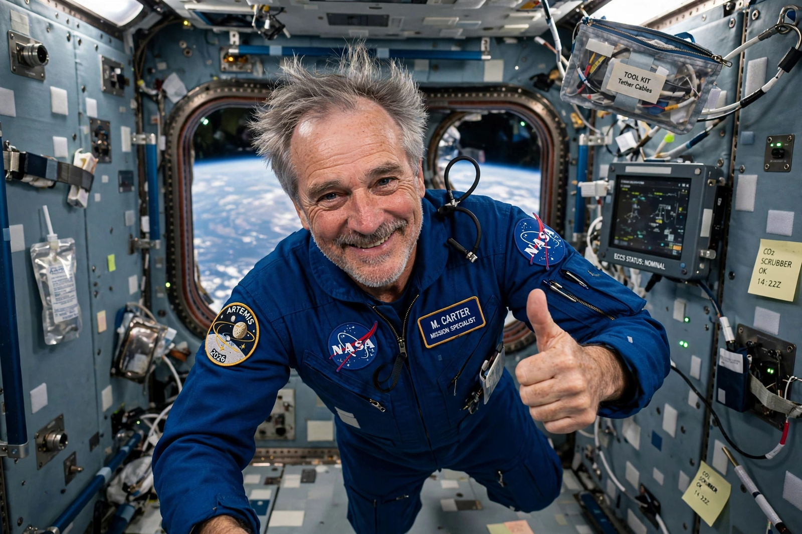

Dennis Tito
From Wikipedia, the free encyclopedia
| Dennis Tito | |
|---|---|
| Born | 8 August 1940, Queens, New York |
| Known for | First self-funded space tourist (2001) |
| Flight | Soyuz TM-32 to the ISS, 28 April – 6 May 2001 |
| Reported price | ~US$20 million |

The first tourist.Dennis Anthony Tito (born 1940) is an American engineer and entrepreneur who in 2001 became the first space tourist — a private citizen who paid for his own flight to orbit — spending eight days aboard the International Space Station via a Russian Soyuz, arranged by Space Adventures for a reported $20 million. His flight, over NASA's initial objections, opened the era of commercial human access to orbit.
Tito, a former JPL trajectory engineer turned investment manager, had pursued the flight for a decade — first toward Mir, whose deorbit in 2001 redirected him to the ISS. NASA resisted a non-professional aboard the young station, requiring waivers and restricting his access to the US segment; relations thawed after he completed agreed training, and his disciplined conduct — despite severe space sickness early on — set the template for accepting paying guests.
Chain reaction
Tito's flight proved the market that produced the ISS visitor era (Shuttleworth, Ansari, Simonyi twice), then the suborbital tourism of Blue Origin and Virgin Galactic, and finally private orbital missions like Axiom's. He and his wife later signed for a SpaceX Starship flight around the Moon — the tourist who started at the station aiming, in his eighties, at the Moon.
See also
Space tourism · Soyuz (spacecraft) · International Space Station · Anousheh Ansari